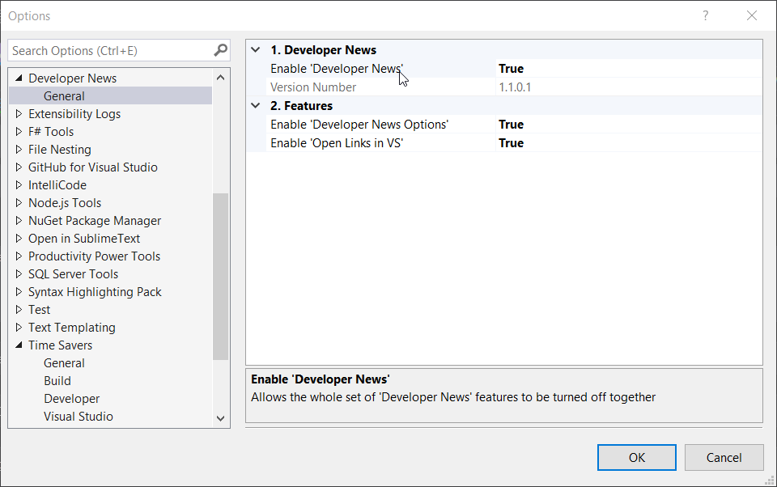

Features
To display the new Start Page+ window:
- click View | Start Page+
Dev News Feed¶
The Dev News feed is based on the feed from the Start Page+ control on the old VS 2017 startup page. It's the first feed that has been added to the new Start Page+ window.

Other Feeds¶
Other feeds will follow in the near future. Check out the Roadmap for more details.
Options¶

Enable 'Start Page+'¶
This setting allows the whole set of Start Page+ features to be turned off together.
Version Number¶
Displays then version number of Start Page+ that's currently installed.
Enable 'Open Links in VS'¶
The default value is true, meaning that any item link that is clicked will be opened in a window
inside of Visual Studio.
A value of false will result in the link being opened in your default browser.